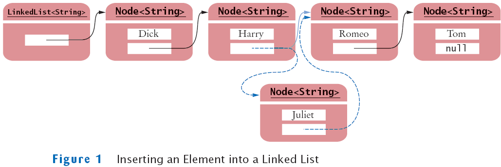
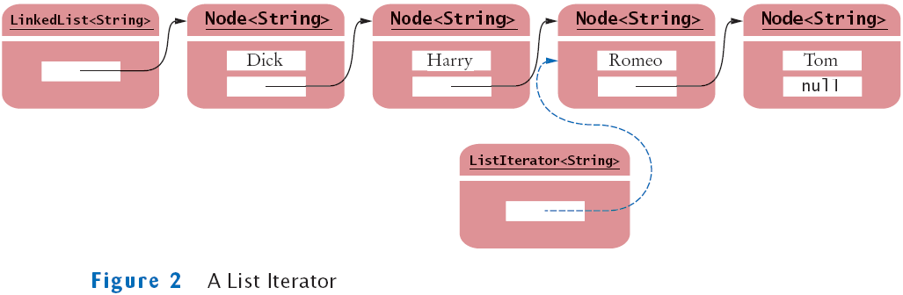
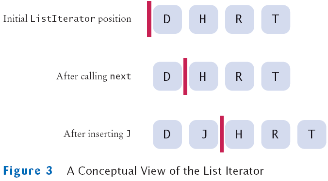
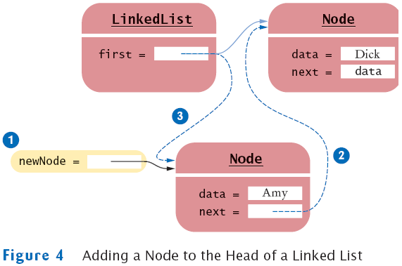
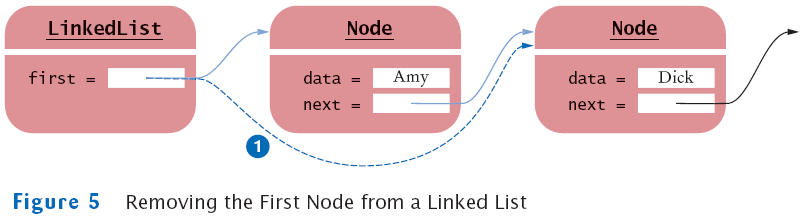
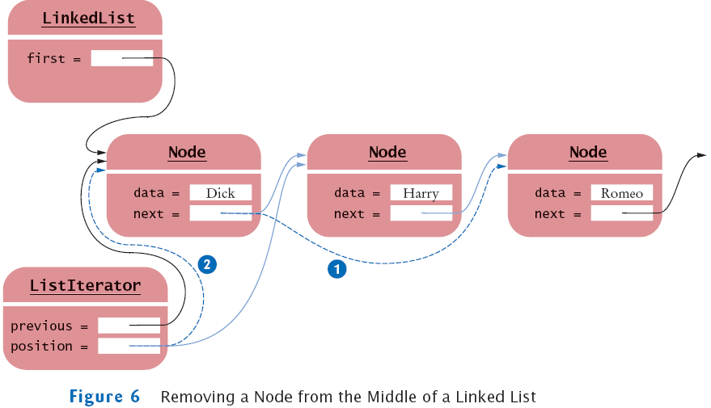
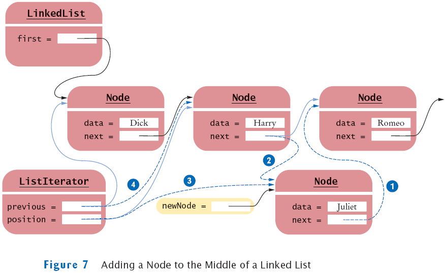
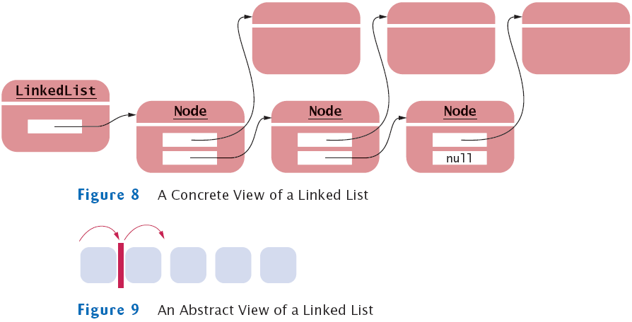
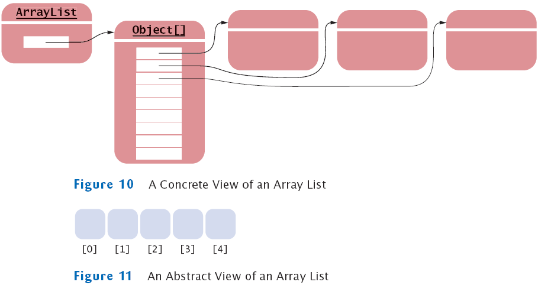
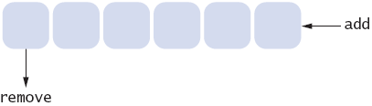

Chapter 20
An Introduction to Data Structures
Chapter Goals
- To learn how to use the linked lists provided in the standard
library
- To be able to use iterators to traverse linked lists
- To understand the implementation of linked lists
- To distinguish between abstract and concrete data types
- To know the efficiency of fundamental operations of lists and
arrays
- To become familiar with the stack and queue types
Using Linked Lists
- A linked list consists of a number of nodes, each of which has a
reference to the next node
- Adding and removing elements in the middle of a linked list is
efficient
- Visiting the elements of a linked list in sequential order is
efficient
- Random access is not efficient
Inserting an Element into a Linked List

Java's LinkedList class
List Iterator
- ListIterator type
- Gives access to elements inside a linked list
- Encapsulates a position anywhere inside the linked list
- Protects the linked list while giving access
A List Iterator

A Conceptual View of the List Iterator

List Iterator
List Iterator
List Iterator
List Iterator
- LinkedList is a doubly linked list
- Class stores two links:
- One to the next element, and
- One to the previous element
- To move the list position backwards, use:
Adding and Removing from a LinkedList
- The add method:
- Adds an object after the iterator
- Moves the iterator position past the new element
iterator.add("Juliet");
Adding and Removing from a LinkedList
Sample Program
- ListTester is a sample program that
- Inserts strings into a list
- Iterates through the list, adding and removing elements
- Prints the list
File ListTester.java
Output
Dick
Harry
Juliet
Nina
Tom
Self Check
- Do linked lists take more storage space than arrays of the same
size?
- Why don't we need iterators with arrays?
Answers
- Yes, for two reasons. You need to store the node references, and
each node is a
separate object. (There is a fixed overhead to store each object in the
virtual
machine.)
- An integer index can be used to access any array location.
Implementing Linked Lists
- Previous section: Java's LinkedList class
- Now, we will look at the implementation of a simplified version
of this class
- It will show you how the list operations manipulate the links as
the list is modified
- To keep it simple, we will implement a singly linked list
- Class will supply direct access only to the first list
element, not the last one
- Our list will not use a type parameter
- Store raw Object values and insert casts when
retrieving them
Implementing Linked Lists
- Node: stores an object and a reference to the next node
- Methods of linked list class and iterator class have frequent
access to the Node instance variables
- To make it easier to use:
- We do not make the instance variables private
- We make Node a private inner class of LinkedList
- It is safe to leave the instance variables public
- None of the list methods returns a Node object
Implementing Linked Lists
public class LinkedList
{
. . .
private class Node
{
public Object data;
public Node next;
}
}
Implementing Linked Lists
- LinkedList class
- Holds a reference first to the first node
- Has a method to get the first element
Implementing Linked Lists
public class LinkedList
{
public LinkedList()
{
first = null;
}
public Object getFirst()
{
if (first == null)
throw new NoSuchElementException();
return first.data;
}
. . .
private Node first;
}
Adding a New First Element
- When a new node is added to the list
- It becomes the head of the list
- The old list head becomes its next node
Adding a New First Element
Adding a Node to the Head of a Linked List

Removing the First Element
- When the first element is removed
- The data of the first node are saved and later returned as
the method result
- The successor of the first node becomes the first node of the
shorter list
- The old node will be garbage collected when there are no
further references to it
Removing the First Element
Removing the First Node from a Linked List

Linked List Iterator
- We define LinkedListIterator: private inner class of LinkedList
- Implements a simplified ListIterator interface
- Has access to the first field and private Node
class
- Clients of LinkedList don't actually know the name of
the iterator class
- They only know it is a class that implements the ListIterator
interface
LinkedListIterator
The Linked List Iterator's next Method
- position: reference to the last visited node
- Also, store a reference to the last reference before that
- next method: position reference is advanced to
position.next
- Old position is remembered in previous
- If the iterator points before the first element of the list,
then the old position is null and position
must be set to first
The Linked List Iterator's next Method
public Object next()
{
if (!hasNext())
throw new NoSuchElementException();
previous = position; // Remember for remove
if (position == null)
position = first;
else
position = position.next;
return position.data;
}
The Linked List Iterator's hasNext Method
- The next method should only be called when the iterator
is not at the end of the list
- The iterator is at the end
- if the list is empty (first == null)
- if there is no element after the current position (position.next
== null)
The Linked List Iterator's hasNext Method
private class LinkedListIterator implements ListIterator
{
. . .
public boolean hasNext()
{
if (position == null)
return first != null;
else
return position.next != null;
}
. . .
}
The Linked List Iterator's remove Method
- If the element to be removed is the first element, call removeFirst
- Otherwise, the node preceding the element to be removed needs to
have its next reference updated to skip the removed
element
- If the previous reference equals position:
- this call does not immediately follow a call to next
- throw an IllegalArgumentException
- It is illegal to call remove twice in a row
- remove sets the previous reference to position
The Linked List Iterator's remove Method
public void remove()
{
if (previous == position)
throw new IllegalStateException();
if (position == first)
{
removeFirst();
}
else
{
previous.next = position.next;  }
position = previous;
}
position = previous;  }
}
Removing a Node From the Middle of a Linked List

The Linked List Iterator's set Method
The Linked List Iterator's add Method
- The most complex operation is the addition of a node
- add inserts the new node after the current position
- Sets the successor of the new node to the successor of the
current position
The Linked List Iterator's add Method
public void add(Object obj)
{
if (position == null)
{
addFirst(obj);
position = first;
}
else
{
Node newNode = new Node();
newNode.data = obj;
newNode.next = position.next;
position.next = newNode;
position = newNode;  }
previous = position;
}
previous = position;  }
}
Adding a Node to the Middle of a Linked List

File LinkedList.java
File ListIterator.java
Self Check
- Trace through the addFirst method when adding
an element to an empty list.
- Conceptually, an iterator points between elements (see Figure 3).
Does the
position reference point to the element to the left or to the element
to the right?
- Why does the add method have two separate cases?
Answers
- When the list is empty, first is null.
A new Node is allocated. It's data field is set
to the newly inserted object. It's next field is set to null
because first is null.
The first field is set to the new node. The result is a
linked list of length 1.
- It points to the element to the left. You can see that by tracing
out the first call
to next. It leaves position to point to the first node.
- If position is null, we must be at the head of the
list, and inserting an element
requires updating the first reference. If we are in the
middle of the list, the
first reference should not be changed.
Abstract and Concrete Data Types
- There are two ways of looking at a linked list
- To think of the concrete implementation of such a list
- Sequence of node objects with links between them
- Think of the abstract concept of the linked list
- Ordered sequence of data items that can be traversed with
an iterator
Abstract and Concrete Data Types

Abstract Data Types
- Define the fundamental operations on the data
- Do not specify an implementation
Abstract and Concrete Array Type
- As with a linked list, there are two ways of looking at an array
list
- Concrete implementation: a partially filled array of object
references
- We don't usually think about the concrete implementation when
using an array list
- We take the abstract point of view
- Abstract view: ordered sequence of data items, each of which can
be accessed by an integer index
Abstract and Concrete Data Types

Abstract and Concrete Data Types
- Concrete implementations of a linked list and an array list are
quite different
- The abstractions seem to be similar at first glance
- To see the difference, consider the public interfaces stripped
down to their minimal essentials
Fundamental Operations on Array List
public class ArrayList
{
public Object get(int index) { . . . }
public void set(int index, Object value) { . . . }
. . .
}
Fundamental Operations on Linked List
public class LinkedList
{
public ListIterator listIterator() { . . . }
. . .
}
public interface ListIterator
{
Object next();
boolean hasNext();
void add(Object value);
void remove();
void set(Object value);
. . .
}
Abstract and Concrete Data Types
- ArrayList: combines the interfaces of an array and a list
- Both ArrayList and LinkedList implement an
interface called List
- List defines operations for random access and for
sequential access
- Terminology is not in common use outside the Java library
- More traditional terminology: array and list
- Java library provides concrete implementations ArrayList
and LinkedList for these abstract types
- Java arrays are another implementation of the abstract array type
Efficiency of Operations for Arrays and Lists
- Adding or removing an element
- A fixed number of node references need to be modified
to add or remove a node, regardless of the size of the list
- In big-Oh notation: O(1)
- Adding or removing an element
- On average n/2 elements need to be moved
- In big-Oh notation: O(n)
Efficiency of Operations for Arrays and Lists
| Operation |
Array |
List |
| Random access |
O(1) |
O(n) |
| Linear traversal step |
O(1) |
O(1) |
| Add/remove an element |
O(n) |
O(1) |
Abstract Data Types
- Abstract list
- Ordered sequence of items that can be traversed sequentially
- Allows for insertion and removal of elements at any position
- Abstract array
- Ordered sequence of items with random access via an integer
index
Self Check
- What is the advantage of viewing a type abstractly?
- How would you sketch an abstract view of a doubly linked list? A
concrete view?
- How much slower is the binary search algorithm for a linked list
compared to
the linear search algorithm?
Answers
- You can focus on the essential characteristics of the
data type without being
distracted by implementation details.
- The abstract view would be like Figure 9, but with arrows in both
directions.
The concrete view would be like Figure 8, but with references to the
previous
node added to each node.
- To locate the middle element takes n / 2 steps. To locate
the middle of the subinterval
to the left or right takes another n / 4 steps. The next lookup
takes n / 8
steps. Thus, we expect almost n steps to locate an element. At
this point, you
are better off just making a linear search that, on average, takes n
/ 2 steps.
Stacks and Queues
- Stack: collection of items with "last in first out" retrieval
- Queue: collection of items with "first in first out" retrieval
Stack
- Allows insertion and removal of elements only at one end
- Traditionally called the top of the stack
- New items are added to the top of the stack
- Items are removed at the top of the stack
- Called last in, first out or LIFO order
- Traditionally, addition and removal operations are called push
and pop
- Think of a stack of books
A Stack of Books
Queue
- Add items to one end of the queue (the tail)
- Remove items from the other end of the queue (the head)
- Queues store items in a first in, first out or FIFO
fashion
- Items are removed in the same order in which they have been added
- Think of people lining up
- People join the tail of the queue and wait until they have
reached the head of the queue
A Queue
Stacks and Queues: Uses in Computer Science
- Queue
- Event queue of all events, kept by the Java GUI system
- Queue of print jobs
- Stack
- Run-time stack that a processor or virtual machine keeps to
organize the variables of nested methods
Abstract Data Type Stack
Abstract Data Type Queue
- Queue implementations in the standard library are designed for
use with multithreaded programs
- However, it is simple to implement a basic queue yourself
A Queue Implementation
Self Check
- Draw a sketch of the abstract queue type, similar to
Figures 9 and 11.
- Why wouldn't you want to use a stack to manage print jobs?
Answers
- 
- Stacks use a "last in, first out" discipline. If you are the
first one to submit a
print job and lots of people add print jobs before the printer has a
chance to
deal with your job, they get their printouts first, and you have to
wait until all
other jobs are completed.